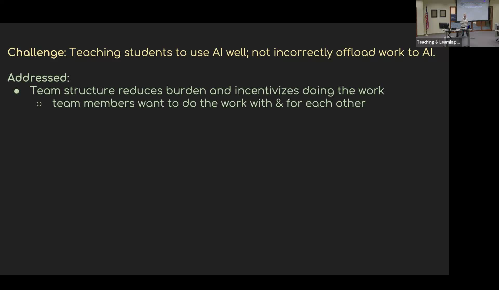

Philosophical Dialogues with Generative AI
Teams of students engage ChatGPT in structured philosophical debates to develop reasoning and collaboration skills.
Presented by Jonna Vance, Associate Professor of Philosophy, Northern Arizona University
About This Project
Philosophy courses at NAU involve students in constructing arguments, responding to objections, and refining positions through dialogue. Vance developed a structured assignment format — "Hey, Dialogue's a Generative AI" — that embeds ChatGPT directly into this dialectical process. Teams of two to four students receive a philosophical prompt, ChatGPT argues one position, the team argues the opposing position, and each side responds to the other in alternating rounds limited to 100 words per turn. Teams then edit the completed dialogue, individuals write structured reflections, and teams present to the class with a question-and-answer period. This format was used in both Intro to Ethics (an introductory course) and Philosophy of Mind (an upper-level seminar).
The pedagogical design drew on three principles. First, multiple dynamic teaching signals: students receive feedback simultaneously from teammates, from ChatGPT's real-time responses, from instructor comments, from their own reflections, and from peers during the presentation. Second, ecological validity: the team-based structure mirrors the collaborative reasoning environments students will encounter in many careers and social settings. Third, embodied cognition: students working in groups with a dynamic interlocutor are more cognitively engaged than students reasoning in isolation. Both introductory and upper-level students reported high value from the activity. The dialogue format also functioned as a diagnostic, revealing differences in individual comprehension that were not visible in other assessment formats.
Project Highlights

